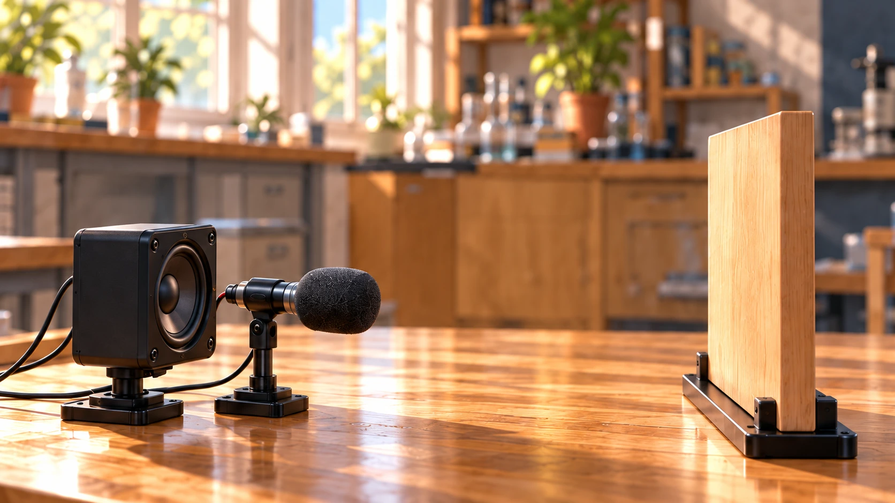
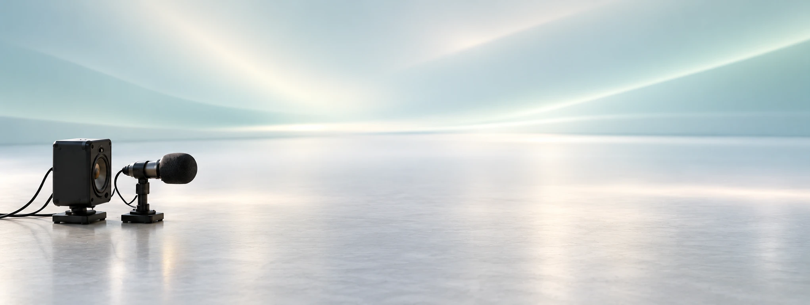
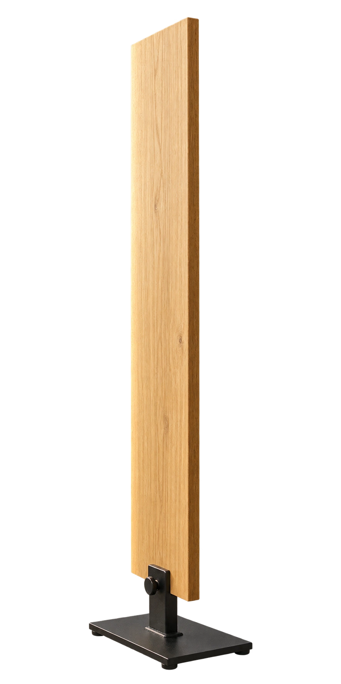

聲音碰到反射板，會怎麼走？
聲波反射：觀察一次發聲的返回
讓喇叭只發聲一次，觀察聲音遇到反射板後的變化。
阿公，為什麼有時候只喊一聲，卻又聽到自己的聲音？
我們可以用喇叭和一塊板子，來說明聲音為什麼會再傳回來。

點喇叭，觀察一次發聲如何返回。
- 1發出短音
- 2到達板面
- 3反射傳回
準備好，點喇叭或按鈕開始。
喇叭只發聲一次，後來卻又聽到一聲！
聲音碰到板子後，有一部分反射回來了。妳有時候會再聽到自己的喊聲，也是因為聲音碰到物體後，又反射回到耳邊。
牆越遠，返回的聲音就越晚嗎？
路程與時間：比較遠近與返回時間
同樣的聲速，一起發聲，比較哪一組先收到。
那牆離得更遠，聲音回來的時間會不會不一樣？
我們讓兩組喇叭同時發聲，比較看看，哪個接收器先收到返回的聲音。
虛擬聲波實驗室
器材放大示意，距離依設定值計算。


接收時間紀錄 聲音傳播時間（秒）
準備好，兩組可一起發聲。
距離比較遠的那一組，聲音回來得比較晚！
聲速相同，牆越遠，聲音往返的路程就越長，花的時間也越久。所以，返回的時間可以成為判斷距離的線索。
知道回來的時間，怎麼算牆有多遠？
往返測距：從聲音走過的路程推算距離。
上一區由距離觀察返回時間；這次反過來，由往返時間推算距離。
反射板越遠，聲音回來就越晚。那反過來，知道聲音回來花了多久，是不是就能算出反射板有多遠？
可以，還要用到聲速。我們先算出聲音在這段時間總共走了多遠，再想想這個路程和反射板的距離有什麼關係。
-
去程和回程，總共走了 4 秒。
器材與路徑為示意，距離依設定值計算。 -
聲速 × 往返時間，算總路程
340 × 4＝1,360 公尺 -
去程＝回程，總路程分成兩半
總路程 1,360 公尺 -
總路程 ÷ 2，得到單程距離
1,360 ÷ 2＝680 公尺所以，裝置到反射板的距離是 680 公尺。
距離＝聲速 × 往返時間 ÷ 2
準備好，可點喇叭或按鈕觀察。
題給聲速 340 m/s；反射板固定、往返同介質，發射與接收近似同位置。這是虛擬模型的條件，並非現場量測。
海底看不見，怎麼知道有多深？
主動聲納：從回波時間描出海底的起伏
阿公，那用聲音回來的時間算距離，可以拿來做什麼呢？
像船隻探測海底有多深，就會用到這個方法。船底的探頭先發聲，接收海底反射回來的聲音後，就能利用往返時間推算深度。
船上看到的海底輪廓
深度（公尺）探測後，這裡會留下測點。
僅連接已測點；點間為直線估計。
本次測深
探頭到海底的距離
—公尺
選好船位，發聲後查看測深結果。
累積探測紀錄
| 測點 | 往返時間 | 深度 |
|---|
尚無探測點。
點船發聲；拖船或點箭頭移動。探測中（含暫停）船位固定。
模型說明
這是多種海底地形的組合示意，並非特定海域；船與探頭放大、橫向距離壓縮。深度約150–2,250公尺，往返約0.2–3秒；垂直深度與時間使用同一比例。深海實際沒有陽光，剖面以可視化方式呈現。固定地形、垂直聲路，距離從船底探頭起算。1,500 m/s 是題給近似值；可聽短音僅提示發射與接收，並非真實水下聲納錄音。
找找生活中聲音反射的蹤影
室內反射與吸音：比較加入材料前後的變化
阿公，那我們平常待的房間裡，聲音碰到四周的牆，也會反射回來嗎？
會，聲音可能從不同的牆面反射回來。我們可以加入吸音材料，讓部分反射回來的聲音減弱。
觀察從四周牆面反射回來的波，哪一面牆的反射波先回到小葵身旁？
俯視聲波示意動畫・非實際傳播速度
先發聲觀察，再加入材料重新比較。
先發聲觀察；暫停後切換材料，可直接比較同一時刻。
波線的深淺與粗細表示相對強弱。加入材料只減弱左側、上側兩面牆的反射；切換時保留同一畫面，方便比較。
模型與音效說明
空教室為簡化模型；波前以示意動畫呈現水平切片，非實際傳播速度。語音僅取代表波前，音效不與動畫逐波同步。播放結束後回到沒有波線的房間畫面；播放中可暫停、切換材料比較同一時刻。音效以三維房間模型合成，包含地板、天花板和多次反射，並非現場錄音或個人聽覺量測。材料反射強弱為定性示意；比較時保留相同發聲、位置與直接聲強度。吸音減少部分反射，與阻擋聲音穿過牆壁的隔音作用不同。
單元小測
這口井有多深？
朝井底喊一聲，利用回聲計算井深。
點小葵或按鈕，朝井底喊一聲。
回聲紀錄
題目條件
空氣聲速340 公尺／秒聲音從井口到井底，再返回井口。
情境與聲音說明
本題是乾井的簡化模型，只取井底的主要回聲，未呈現側壁的其他反射。發聲與接收近似位於井口；題給空氣聲速340公尺／秒，忽略溫度隨深度變化。小葵喊聲為合成配音；同一喊聲降低音量後，依題目往返時間返回。這是教學示意，並非真實井的量測。若井內有水，水面反射測得的是井口到水面的距離。
資料依據與模型說明
依教育部自然科學領綱Ka-Ⅳ-4及說明4-1；參考康軒115課程計畫、翰林公開回聲應用資料及校本課程計畫。時間、波前及室內反射是教學示意。